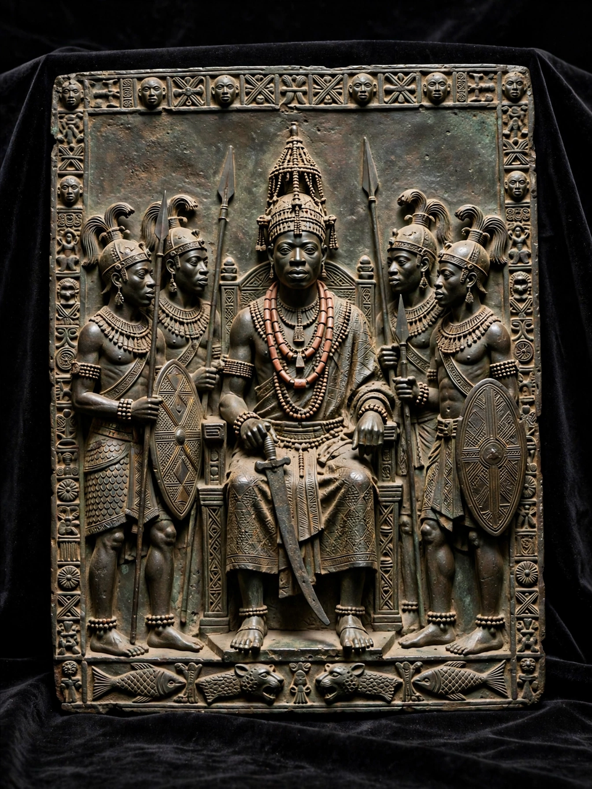

| Benin Bronzes | |
|---|---|
| Origin | Kingdom of Benin (Edo), present-day Nigeria |
| Date | Mainly 16th–17th centuries (tradition older) |
| Medium | Brass and bronze plaques, heads, figures |
| Dispersed | 1897, after the British "Benin Punitive Expedition" |
| Estimated total | Several thousand objects in Western collections |

The Benin Bronzes are a group of several thousand metal plaques and sculptures that decorated the royal palace of the Kingdom of Benin, in what is now Edo State, Nigeria. Cast mainly from brass (and conventionally called bronzes) by Edo guild craftsmen using the lost-wax method, they document court life, warfare, trade and the divine kingship of the Oba. Dating largely from the 16th and 17th centuries, they are among the most celebrated achievements of African art.
In January 1897 a British trade mission was ambushed outside Benin City; in retaliation, a British naval force — the so-called Benin Punitive Expedition led by Admiral Harry Rawson — attacked and burned the city that February and exiled Oba Ovonramwen. British forces looted thousands of bronzes, ivories and other treasures from the palace. To defray the expedition's costs, the Foreign Office sold the bronzes, and they dispersed into museums and private collections across Europe and America, notably the British Museum in London and the Ethnologisches Museum in Berlin.
Nigeria has sought the bronzes' return since independence in 1960. For decades Western museums resisted, but momentum shifted in the 2010s–2020s: Jesus College, Cambridge and Aberdeen returned pieces in 2021; in 2022 the Horniman Museum in London transferred ownership of 72 objects, the Smithsonian returned 29 bronzes, and Germany transferred ownership of more than 1,000 Benin objects to Nigeria — the largest restitution of colonial-era art to date. The British Museum, holding over 900 pieces, remains barred by the British Museum Act 1963 from permanently deaccessioning, though loans are discussed. Returned bronzes are destined in part for the planned Edo Museum of West African Art in Benin City.
This article was recreated from memory as part of a web-reconstruction exercise.